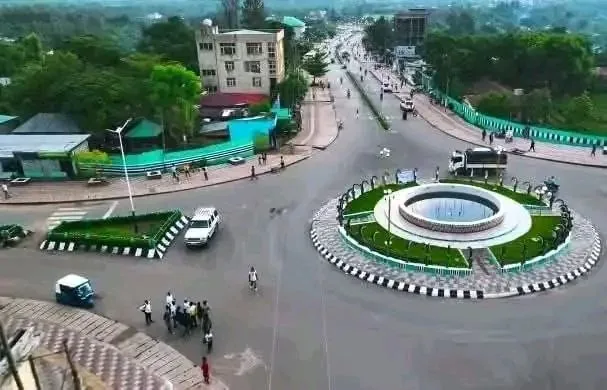
01Karat
The main town and a practical base for transport and supplies.

Meet Konso: a place where stone terraces, close-knit villages and deep-rooted knowledge tell a story still unfolding.
01 THE LANDSCAPE
For centuries, Konso communities have shaped steep hillsides into productive farmland, building terraces and stone walls that hold both soil and memory.
Some terrace walls reach up to five metres. The dry-stone structures retain soil, manage water and support farming on steep ground.
Get to know Konso02 A FIELD GUIDE
Konso heritage is a connected landscape of lived-in walled settlements, working fields, shared spaces and protected forests. The UNESCO property brings these features together across the Konso highlands.

01The main town and a practical base for transport and supplies.
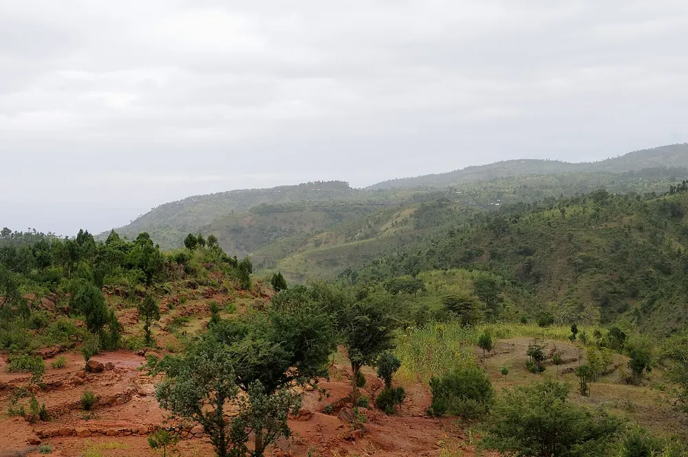
02A named place in UNESCO's photo record of terrace conservation, showing that stewardship is ongoing work, not only history.
A documented walled town (paleta), with stone walls, gates and moras. Its heritage record cites the original Konso nomination dossier.
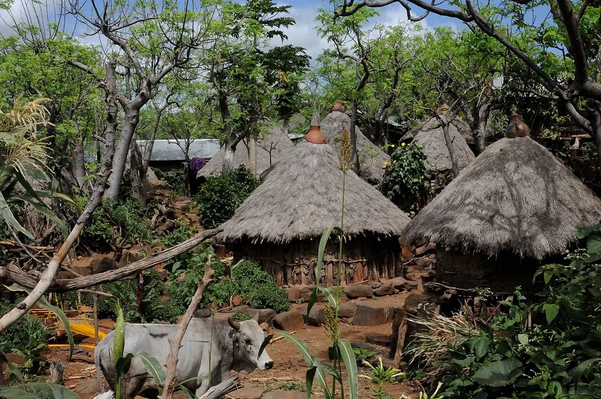
04A named Konso village in published travel references. Treat map pins as orientation only and confirm routes and access with a local guide.
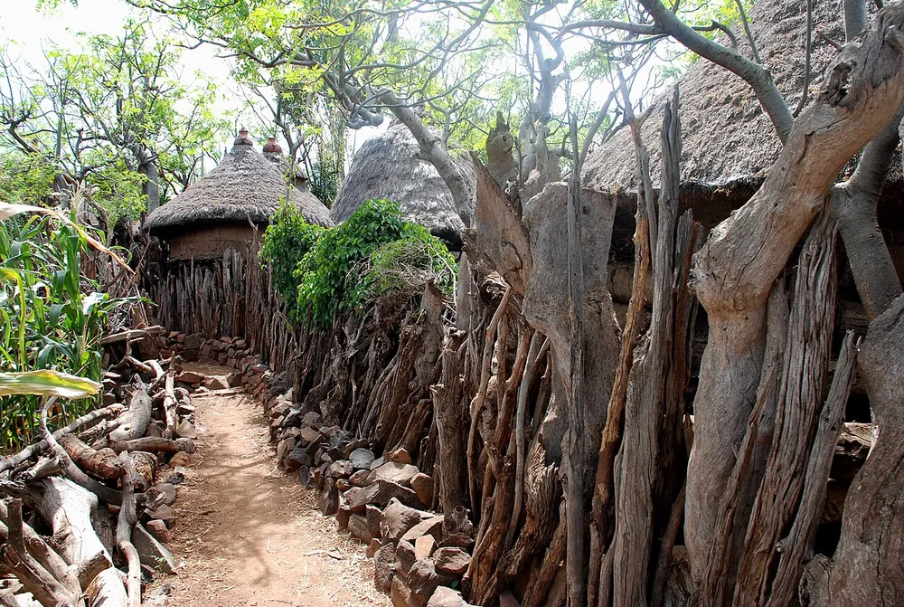
05Fortified settlements set on high ground. Their stone walls, lanes and central moras form places for community life; the towns remain homes, not open-air museums.
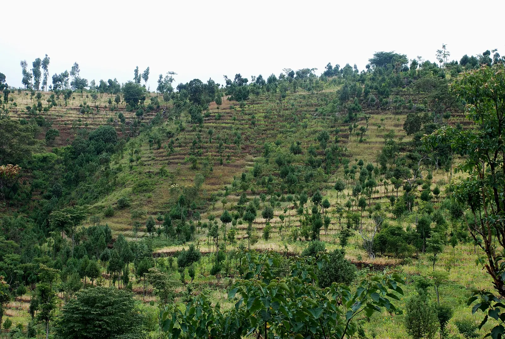
06Dry-stone walls contour the hillsides, slow erosion and help manage scarce water. Communal reservoirs, known as harda, are part of this living system.
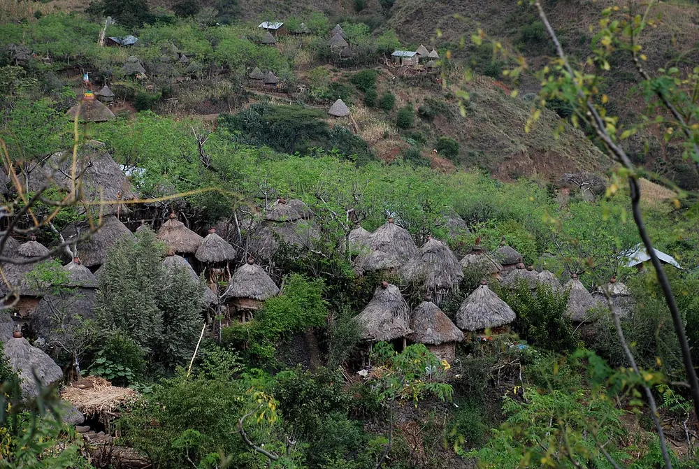
07Traditional forests, shrines and burial places are among the landscape's heritage features. Some are sensitive or restricted; their locations should be shared by local custodians.
 08
08
Tall pinnacles carved by erosion in a gorge near the village of Gesergiyo in Konso. The local nickname refers to their skyline-like forms; learn about the landmark and visitor context on the About page.
ORIENT YOURSELF
This map is for general orientation only. It does not mark private homes, ceremonial spaces or every community route. Confirm destinations and access with a local guide.
Open the map Map data © OpenStreetMap contributors03KARAT
Karat is the main town and a practical base for arranging transport, a local guide and supplies. Confirm routes and services locally before setting out.
STAYS AROUND KARAT
The hotel describes itself as being in the heart of Karat. Confirm availability and current services directly.
Listed near Karat; booking enquiries are handled through its associated Omo Valley Tours operator. Confirm current availability before booking.
Local directory and map listings exist, but current availability is unclear. Verify it is operating before planning around it.
Listings are for trip planning, not endorsements. Prices, phone numbers and road access can change; confirm directly before travel.
04 CULTURE & EVERYDAY LIFE
These are connected strands of a living culture. Practices differ between communities and change over time; the people of Konso are the best guides to their meaning.
THE KONSO PEOPLE · SOUTHERN ETHIOPIA
Loading the Konso people profile…
04a WATCH & LEARN
Documentary films about the Konso Cultural Landscape, its terraces and living heritage. Each link opens a video on YouTube; the films belong to their own channels and are not produced by this guide.
 The Konso Cultural LandscapeA short documentary from Ethiopia · African Sights
The Konso Cultural LandscapeA short documentary from Ethiopia · African Sights
 A Living Legacy of TerracingRock-wall terraces and living heritage · ESFSAC Ethiopia
A Living Legacy of TerracingRock-wall terraces and living heritage · ESFSAC Ethiopia
 Terracing and moringaAt the Konso Cultural Centre · konsoculturalcentre
Terracing and moringaAt the Konso Cultural Centre · konsoculturalcentre
 Konso, Land of OriginsA film about Konso, southern Ethiopia · Land of Origins
Konso, Land of OriginsA film about Konso, southern Ethiopia · Land of Origins
Videos open on YouTube in a new tab. Availability and content are controlled by the original publishers.
04b KONSO ESSENTIALS
Quick, simple facts about the people, their food, dress, drink and the way each generation passes leadership on. Customs differ between villages; local guides are the best teachers.
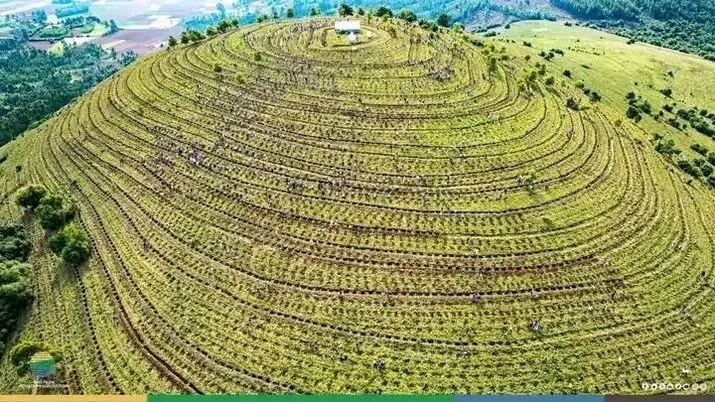
01Konso people are farmers who turned steep, dry hills into terraced fields. Their walled towns (paletas) and 21 generations of tradition earned UNESCO World Heritage status in 2011.
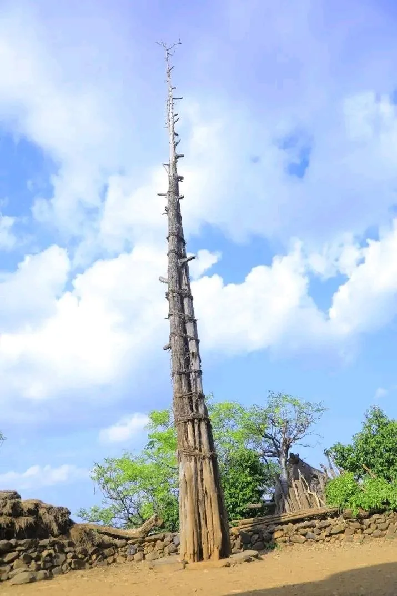
02Each generation raises a wooden pole (olahita, the “generation tree”) and a stone (daga-hela) to mark its time in power. Together they act as the community’s memory.
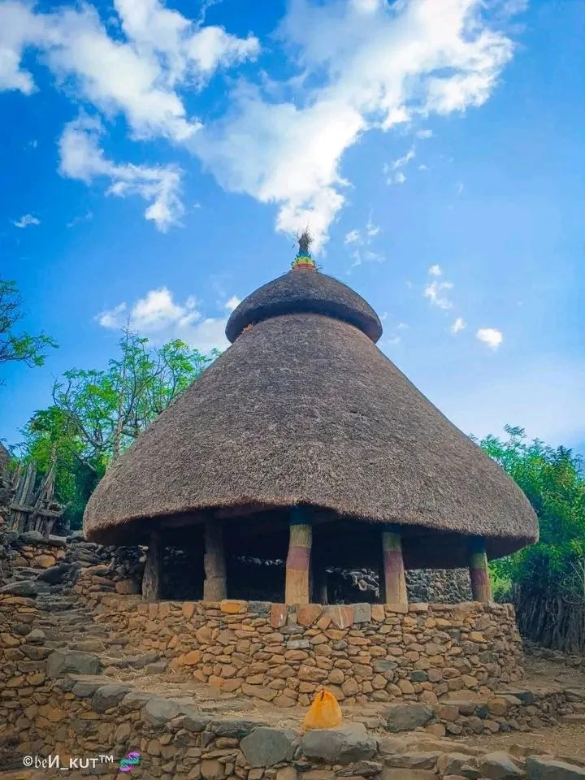
03The mora is the village meeting place: a big thatched house, an open square and shade trees. Elders settle disputes, guests are welcomed and the community remembers its past here.
Power moves from one generation to the next about every 18 years in a ceremony called Hulda. The ruling generation hands leadership to the next, and a new pole and stone are set up.
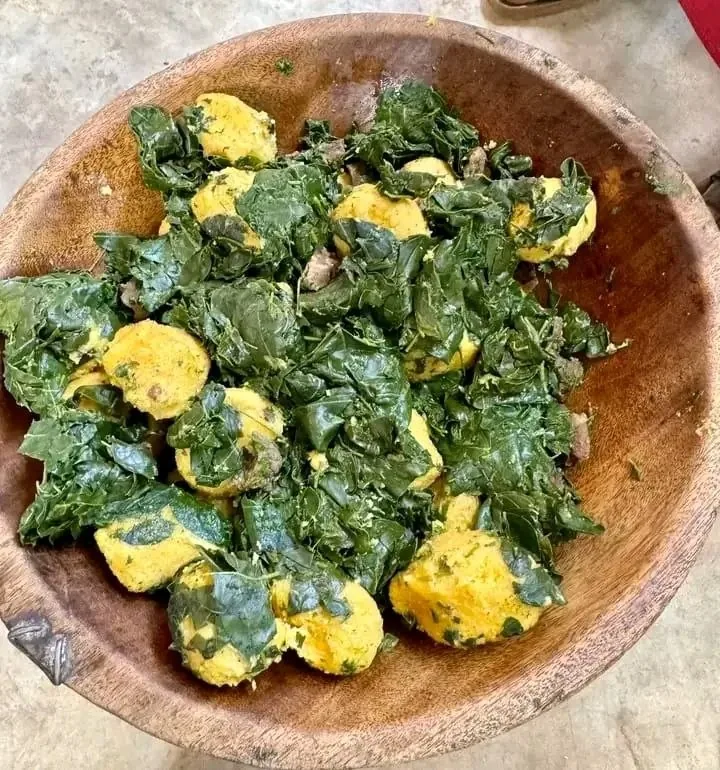
05Sorghum, millet and maize are staples. A famous dish is kurkufa, made with maize and moringa leaves. Moringa (shelgeda) leaves are eaten daily and are central to Konso farming.
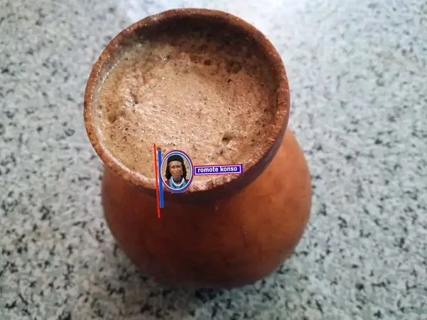
06Chaqaa is the traditional drink, a fermented grain drink. People share it at the mora after a day’s work, and it is offered to guests and at community gatherings.
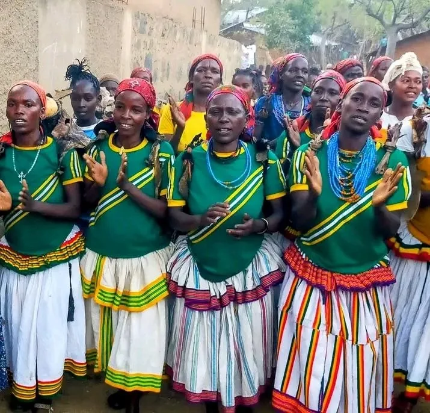
07Traditional clothing is woven from locally spun cotton, often in bright striped wraps, with beads and necklaces. Everyday dress today is mixed; ask before photographing anyone.
Sources: UNESCO World Heritage Centre (Konso Cultural Landscape), Hallpike’s “The Konso of Ethiopia”, and Addis Ababa University research on the Konso mora. Ceremonies, dates and names vary by community.
Konso's terraces and walls are still repaired by the families who depend on them. Walk the lanes with a local guide and see a heritage that is lived, not displayed.
Plan your visit05 KONSO THROUGH THE LENS
Explore the sculpted hills of Gesergiyo, stone-walled villages, market scenes and the places where community life unfolds. Open a photograph to see it larger and check its source and license.
Each photograph links to its source page for attribution and reuse terms. Images labelled “Community photo” were shared for this guide.
06 SEE THE DETAILS
Konso villages are traditionally enclosed by stone walls, with pathways that bring neighbors together. Each settlement reflects generations of shared building and community life.
07 WORLD HERITAGE
UNESCO recognizes the relationship between Konso’s dry-stone terraces, fortified settlements and the knowledge communities use to maintain them.
08 TRAVEL WELL
A few practical reminders for visiting with care.
09 GETTING THERE
Distances and services change, so treat these as starting points and confirm locally before you travel.
Arba Minch has the nearest airport, roughly 85 km north of Konso. Check current Addis Ababa–Arba Minch flight schedules before planning.
Karat is about 540 km south of Addis Ababa via Butajira and Arba Minch. Road is the usual way to travel from the capital.
10 VISITOR INFORMATION
11 MAKE THE JOURNEY
Choose a day length below, then adapt the outline to your interests.
Read about Konso at UNESCO View UNESCO property mapsA FLEXIBLE VISIT
A starting outline, not a fixed tour. Let a local guide and community access shape the day.